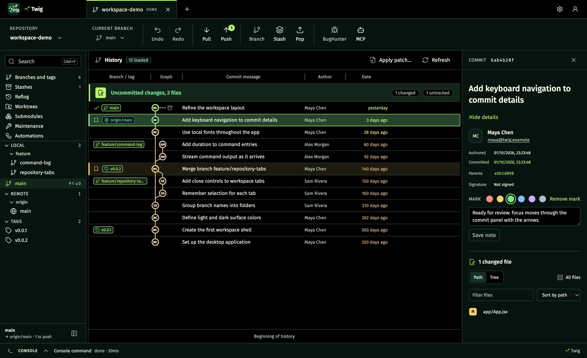
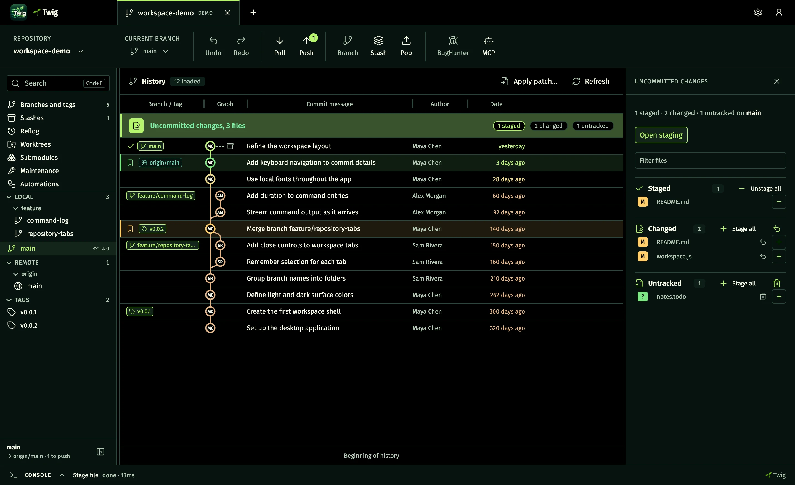
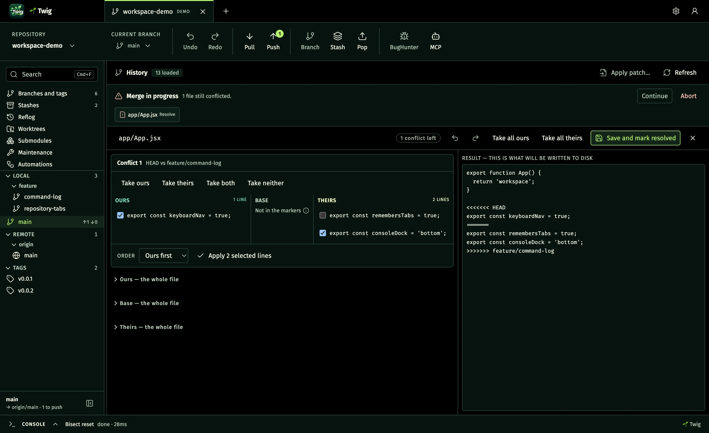
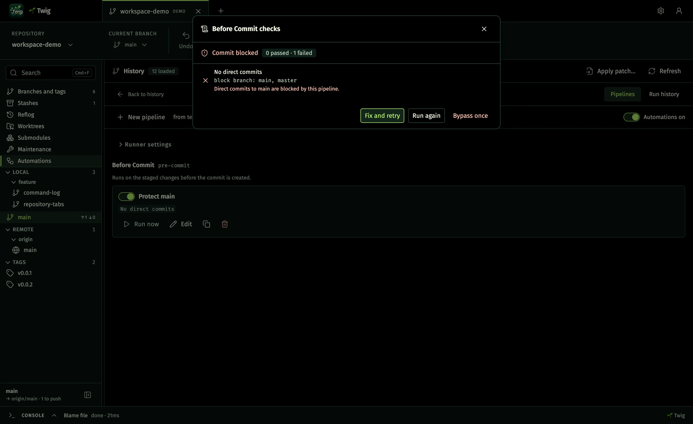
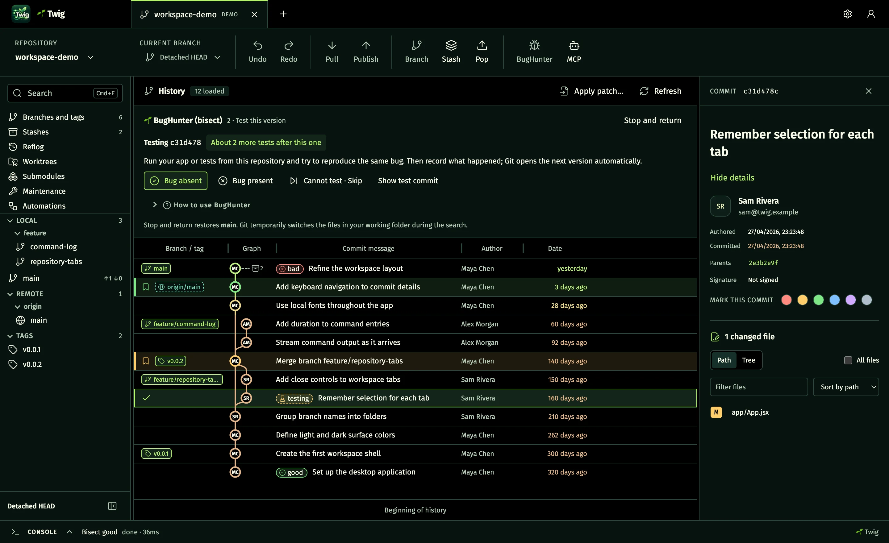
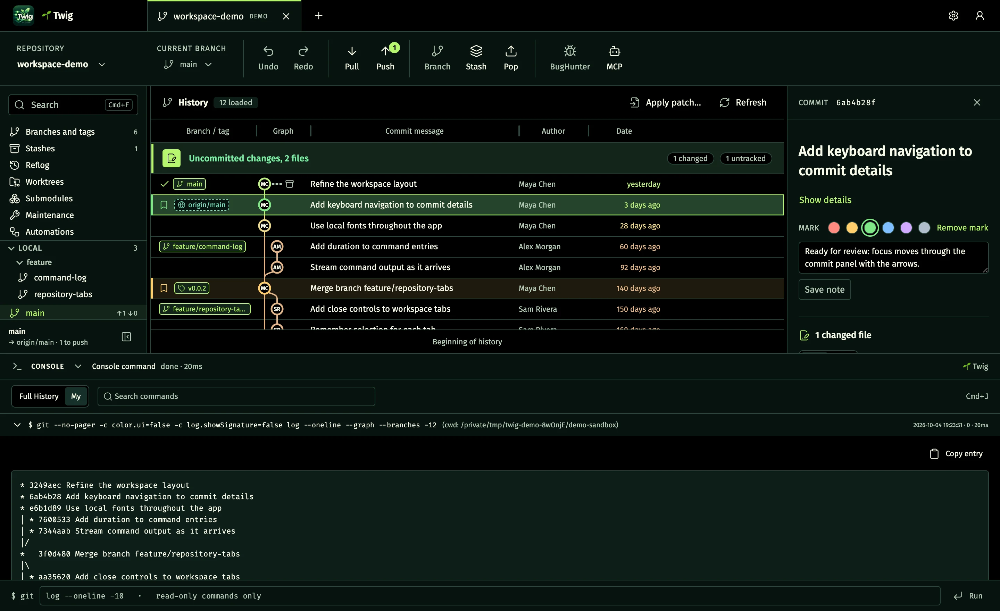

меньше токенов на «когда появился или исчез этот код?», чем у git log -S … -p.
GIT-КЛИЕНТ + MCP · v{{version}} · {{released}}
Git-клиент
для вас
и вашего
AI-агента.
Граф, staging по строкам, rebase и Undo — в окне. Claude Code, Codex и Cursor подключаются к тому же репозиторию через встроенный MCP: видят выделенное вами, тратят меньше токенов, а коммит только предлагают.
macOS · Windows · Linux Предварительная версия
ЧТО ВЫДЕЛЕНО В 🌱 TWIGget_ui_context
«Объясни этот коммит»
Хэш копировать не нужно — агент видит выделенное.
a4f891cfix: restore search resultsЧто выделено?коммит a4f891c, файл search.js
get_ui_contextКоммит целикомсообщение и патчи одним вызовом
get_commitОтвет — про коммит на вашем экранеДва вызова и ни одного хэша в чате.
ЗАМЕР · CLAUDE OPUS 5.5search_history
«Когда добавили или убрали requestAnimationFrame?»
9 коммитов в истории. Сколько токенов прочитал агент.
git log -S… -p189 272git log -S… -p | grep -C34 745search_history2 992−98 % токенов, один вызовСтроки вокруг совпадений, а не все диффы. На пяти запросах — в 3–63 раза меньше.
ОКНО 🌱 TWIGpropose_commit
Агент предлагает.
Коммитите вы.
Файлы, сообщение, версия и тег — перед глазами. Undo отменит и этот коммит.
2 файла · сообщение можно поправить
M README.md +1 −0A docs/connect.md +24 −0docs: explain how to connect an agentВерсия 0.2.0 → 0.2.1Тег v0.2.1
CancelCommitCommit & Push
Иллюстрация · цифры поиска — из замера на странице MCP
Без аккаунта и телеметрииMCP выключен, пока вы не включитеЛокальный сокет, без сетевого портаМодель безопасности
ДЛЯ ВАС · GIT-КЛИЕНТ
Граф, изменения и команды — рядом.
Все ветки и теги коммита — по именам.
Снято в самом 🌱 Twig, не нарисовано.

ПОЧЕМУ 🌱 TWIG
Агенту — меньше токенов.
Вам — последнее слово.
Агент и так умеет звать git. 🌱 Twig даёт ему только то, что дешевле или чего у git нет. Замер на настоящих изменениях, токены считал Claude Opus 5.5.
на «кто и зачем менял эти строки»: −92…−95 % токенов против git blame и git log.
короче ответ на «что изменено?» — один вызов, сразу с числом строк.
| Задача | Агент с git | Агент с 🌱 Twig |
|---|---|---|
| «Объясни этот коммит» | Вы копируете хэш в чат | Видит, что выделено в окне |
| Lock-файл на 12 МБ | Весь дифф — в контекст | Одна строка: размер и команда, чтобы дочитать |
| Коммит и push | Запускает сам | Предлагает, Commit нажимаете вы, Undo работает |
| Что видно вам | Терминал агента | Каждый запрос — в журнале 🌱 Twig с плашкой MCP |
ДЛЯ ВАС · ВОЗМОЖНОСТИ
Ежедневный Git
и трудные случаи.
Работает с вашим установленным Git — своего движка вместо него 🌱 Twig не подставляет.
- Каждая команда на видуТочная команда, папка, вывод, код и время — в журнале. Запросы агента помечены MCP.
- Undo для GitКоммит, merge, cherry-pick, checkout, stash и даже discard — правки сначала копируются в Git.
- Проверки до commit и pushТесты, правила ветки и сообщения, поиск секретов — без ручных хуков.
- Staging по строкамФайлы, ханки или отдельные строки. Дифф с номерами и правками внутри строки.
- Rebase по плануПорядок перетаскиванием, squash выделенных, новые сообщения — до запуска.
- Конфликты в три колонкиВаша версия, база и их — результат собирается построчно.
- Ветки перетаскиваниемMerge, rebase, cherry-pick или push — команды видны до запуска.
- 🌱 BugHunterПошаговый
git bisect: какой коммит внёс баг. - Blame и история строкиВерсия до правки, reverse blame, история файла через переименования.
- Дифф картинокРядом, шторкой, наложением или разницей — с рамками вокруг изменений.
- ReflogПотерянные коммиты помечены, ветка восстанавливается под прежним именем.
- Поиск по всей историиПо сообщению, хэшу, автору, пути и коду (
-S,-G). - Марки и заметкиЦвет и текст на коммите — только у вас, не в репозитории.
- Worktrees, сабмодули, LFSА ещё подписи коммитов, патчи, теги и обслуживание репозитория.
- Учебная песочницаНастоящий репозиторий с remote: пробуйте merge и rebase без риска.
- Обновления в один кликУстановщик сверяется с релизом по SHA‑256, сборка для macOS подписана и нотаризована.
Без аккаунта и телеметрии
Репозитории, марки и журнал остаются на компьютере. Сам 🌱 Twig ходит в сеть только за проверкой обновлений (её можно выключить) и за фоновым fetch — если вы его включили.
ЭКРАНЫ ПРИЛОЖЕНИЯ
Снято в самом 🌱 Twig, не нарисовано.
Все снимки — демо-репозиторий, который
открывается при первом запуске.






Полный список выпусков — в CHANGELOG и на странице Releases.
MACOS / WINDOWS / LINUX
Скачать 🌱 Twig
MCP-сервер уже внутри — отдельно ставить ничего не нужно.
Демо-репозиторий открывается при первом запуске.
Версия {{version}}Предварительная версия
{{downloads}}
Нужен установленный Git. На Mac: Apple Silicon — чипы серии M, Intel — процессоры Intel.
Установка и подпись
Сборка для macOS подписана сертификатом Apple Developer ID и нотаризована — без предупреждения «не удаётся проверить разработчика». Установщик Windows пока без цифровой подписи: SmartScreen может предупредить при первом запуске. Git устанавливается отдельно.
macOS: откройте .dmg и перенесите приложение в «Программы». Windows: запустите установщик .exe. Debian / Ubuntu: установите пакет .deb. Другие Linux: сделайте .AppImage исполняемым (chmod +x) и запустите — установка не нужна. Дальше обновления приходят в самом приложении.